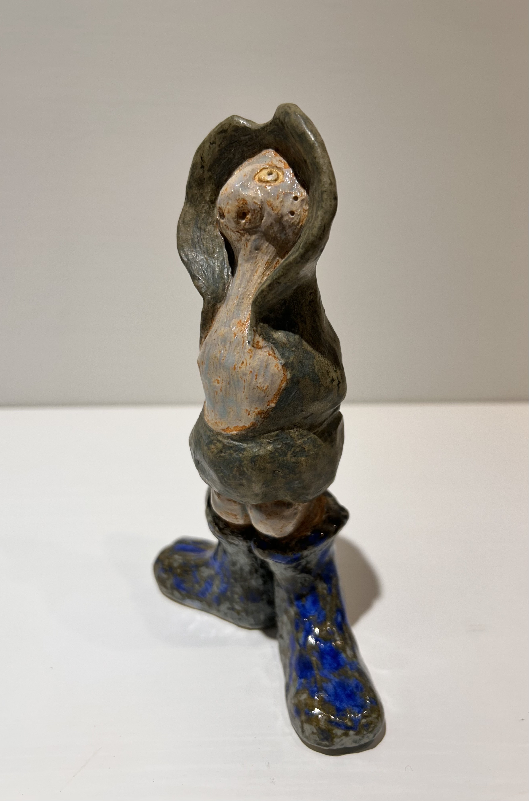
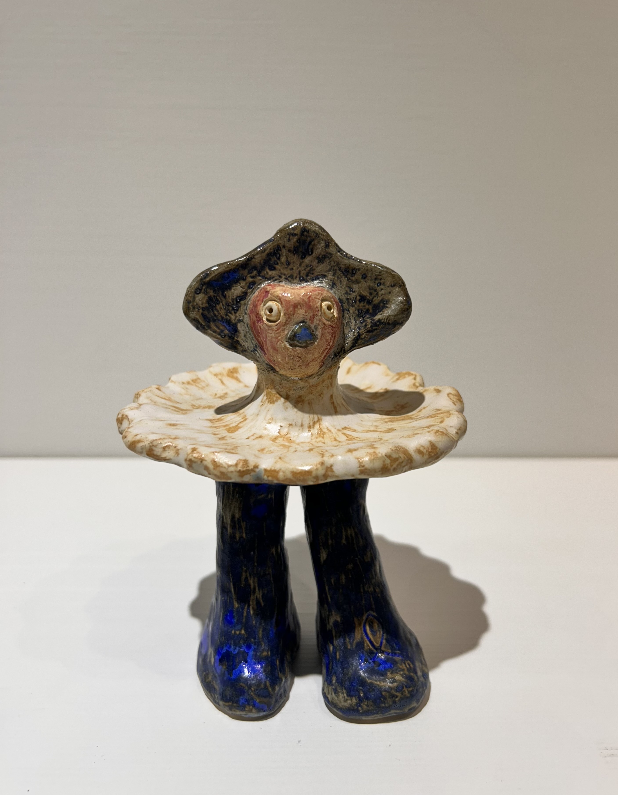
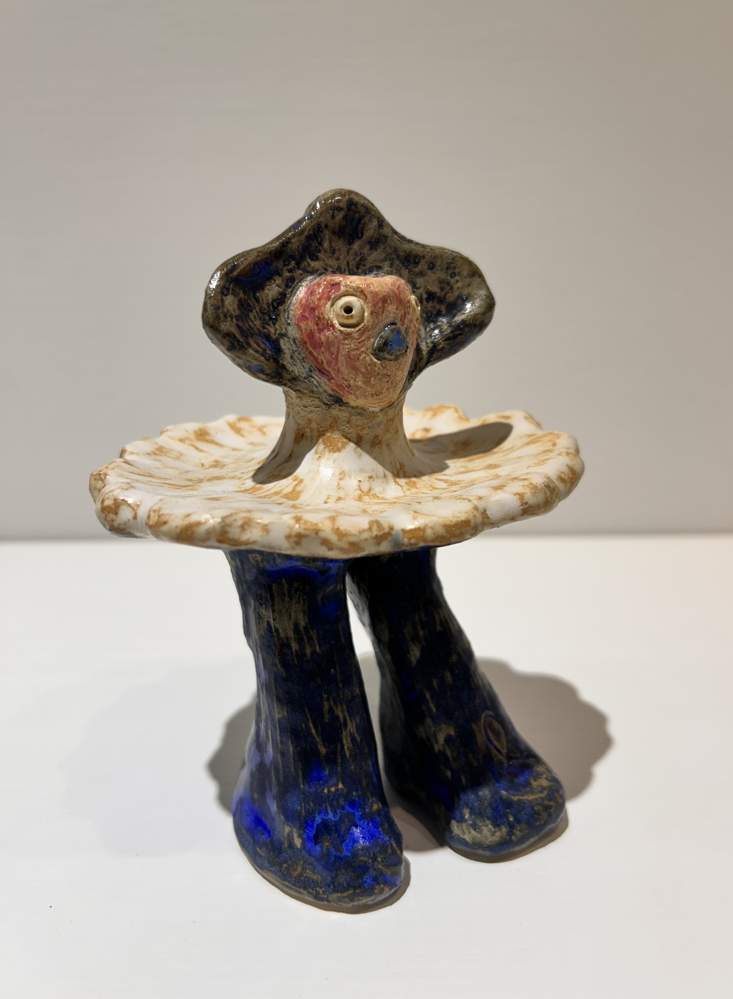
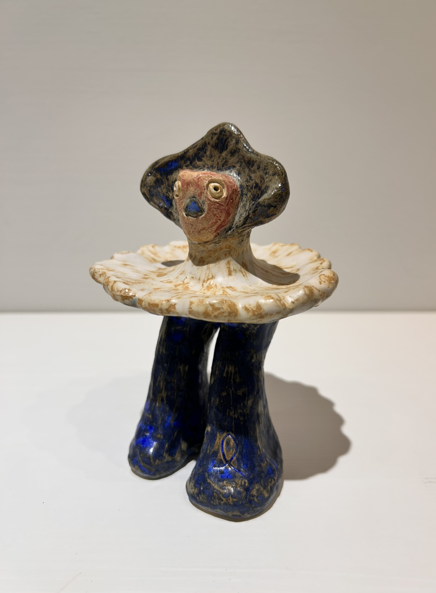

人格地層 Persona Layer
陶塑人格層 Ceramic Persona Layer
從線稿轉成陶塑、立體角色與可被繞行的人格，使公仔也成為生命容器。 Ceramic figures and walk-around personas as vessels of character and life.
來自視界之外 Beyond the Field of Vision

歡顏與記號 Grin and Signs


無言 Wordless


無語 Speechless


